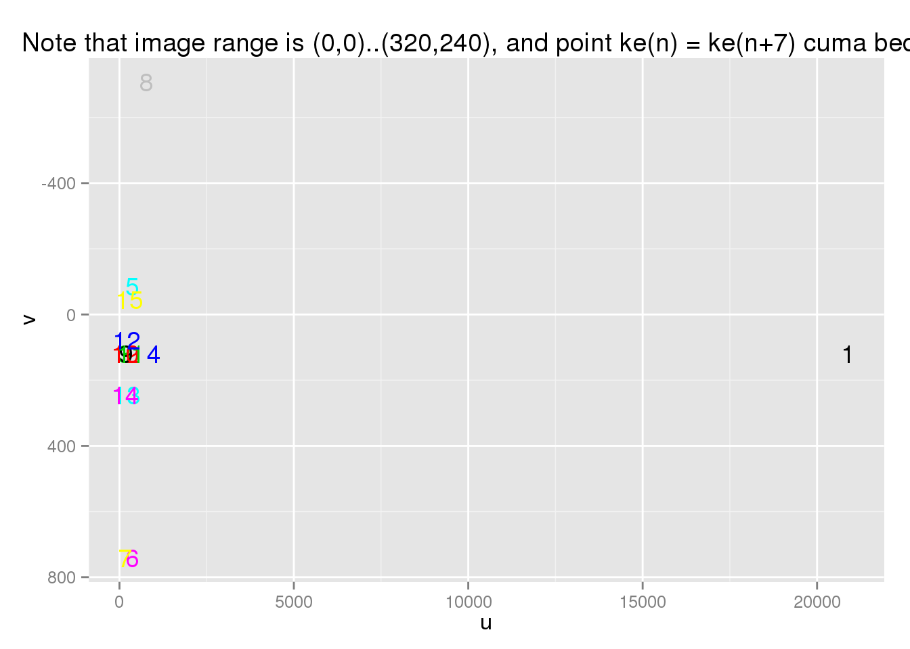
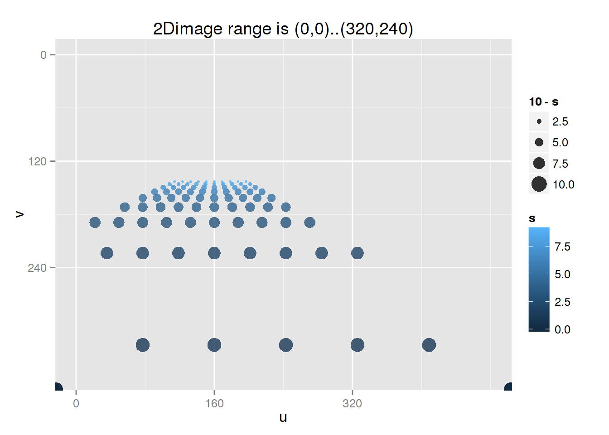
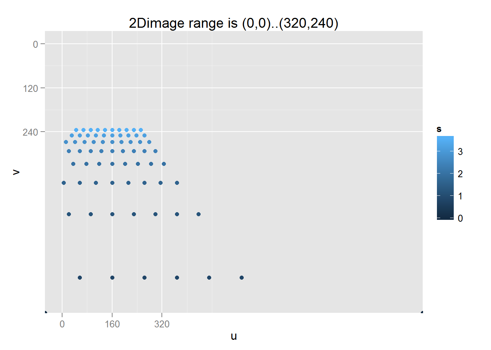
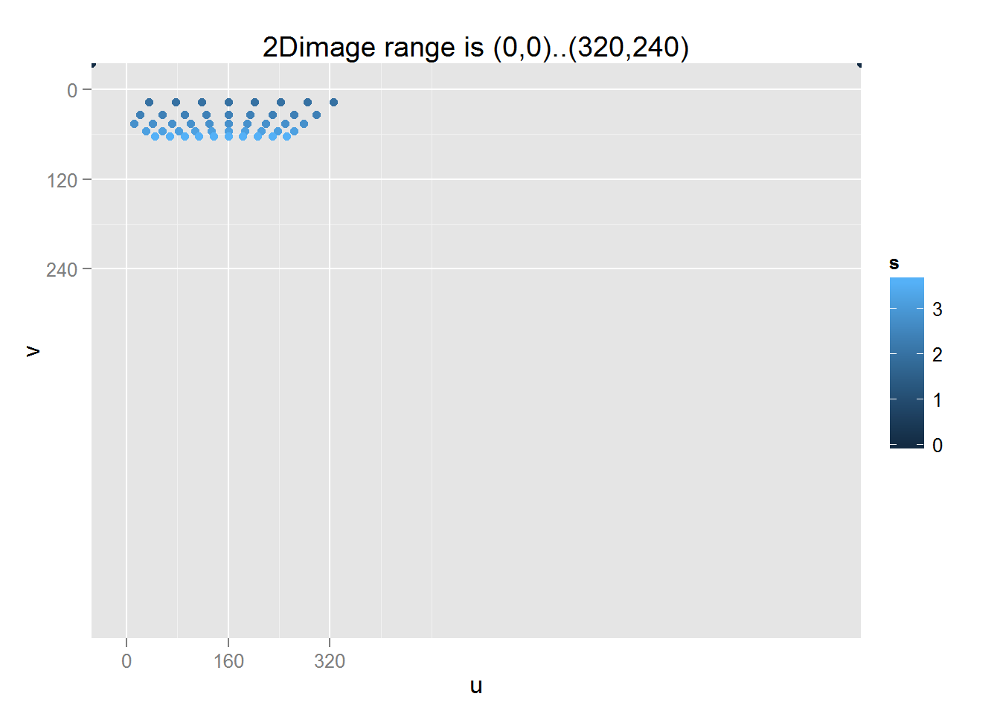
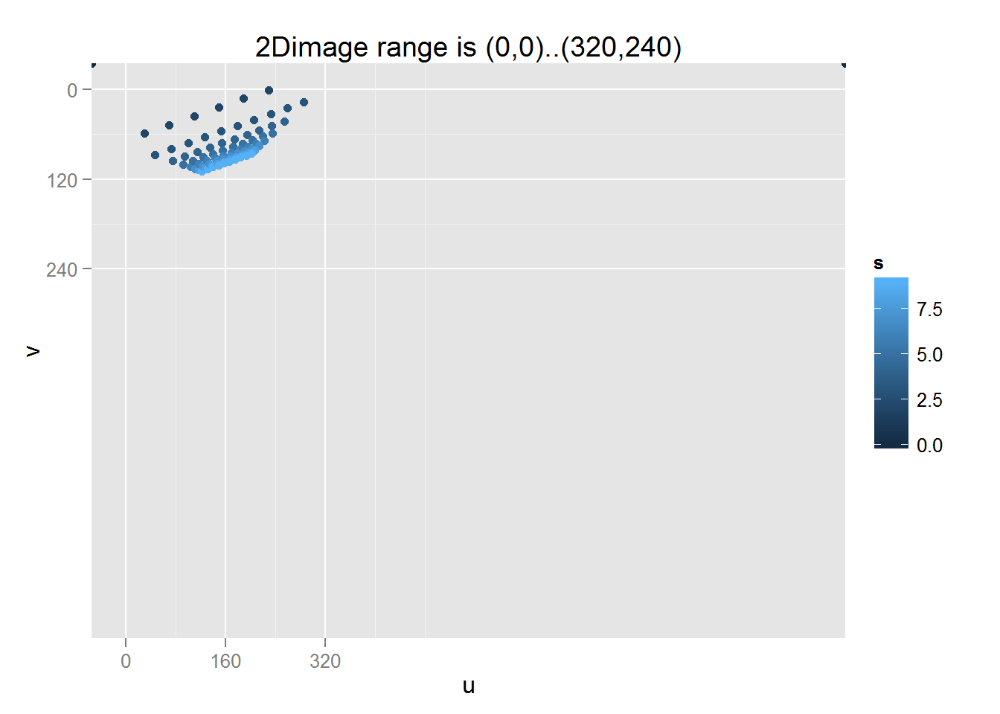

2D to 3D Reconstruction for Virtual Perception
Sigit Ari Wijanarko, Hendy Irawan
Saturday, April 04, 2015
Metrics Units/Scale and 3D Coordinate Systems
Unreal Units (UU) are 1 cm, 0.01 of Blender/SecondLife. +x forward, +y right, +z up.
Unity Units are by default 1 m, terbukti dari setting gravity default 9.81 (m/s) yang sesuai reality, tapi memang Unity lebih lax dalam urusan unit. x+ right, y+ up, z+ away.
Blender Units (BU) are usually 1 m. See Static Mesh from Blender. Left handed: +x is to right, +y away, +z up.
- Dari Blender, pas export FBX, gunakan export scale 1 aja, jadi unit si model tetap meter.
- Di Unreal, pas import FBX, gunakan import scale 0.01. Dari meter menjadi cm.
- Di Unity, pas import FBX, gunakan import scale 1. Dari meter tetap meter.
Second Life / OpenSimulator uses meters. A sim is 256×256 (x×y) meters. x is longitude (from west to east, the wiki is partially incorrect, but the examples are good and are verified here), y is latitude (from south to north). z is altitude where 0 is lowest possible point. When someone is facing north, this is exactly same as Blender.
Dalam sistem Lumen yang dipakai sebagai standar adalah sistem Second Life. Jadi pada saat image recognition/tracking, semua koordinatnya menggunakan aturan Second Life.
- Dari koordinat Lumen ke Unreal, pada saat visualisasi Unreal, maka swap x dan y lalu koordinatnya akan discale menjadi Unreal Units (×0.01). Sebaliknya dari Unreal ke Lumen, koordinatenya discale menjadi SecondLife/Blender units (×100) lalu swap x dan y.
- Dari koordinat Lumen ke Unity, pada saat visualisasi Unity, maka koordinatnya akan di-rotate 90degrees for X (pitch) sehingga y+ up dan z+ away. Sebaliknya dari Unity ke Lumen, koordinatenya dirotate -90degrees for X (pitch) menjadi SecondLife/Blender coordinates (y+ away, +z up).
Untuk rotasi 3D, menggunakan style Blender/SecondLife. See also: rotation Unreal. Unit sudut adalah degrees, karena sudut degrees juga dipakai oleh Unreal/Unity/Blender. Pas kalkulasi internal baru diubah ke radian. Nama sudutnya buka alpha, beta, gamma tapi yang lebih deskriptif yaitu pitch (tengadah), roll (geleng clockwise), yaw (menoleh ke kiri):
- Pitch (RX): Looking up and down (0=Straight Ahead, +Up, -Down).
- Roll (RY): Rotation about axis of screen, 0=Straight, +Clockwise, -CCW.
- Yaw (RZ): Rotating around (running in circles), 0=North, +West, -East. Kalo di Unreal: 0=East, +North, -South.
3D Reconstruction
Formula: http://docs.opencv.org/modules/calib3d/doc/camera_calibration_and_3d_reconstruction.html
s * UV = CM * Rt * XYZs adalah pembagi dari UV, bila UV = (20, 10, 2) maka u = 20/2 = 10, v = 10/2 = 5.
CM = [ fx 0 cx ;
0 -fy cy ;
0 0 1 ]-fy diminuskan karena di gambar 2D, pojok atas adalah v=0 dan bawah adalah misalnya v=240 (untuk dimensi 320x240); padahal di 3D bawah adalah y<0 dan atas adalah y>0.
Untuk mendapatkan fx dan fy, kita menentukan dulu focal length dan ukuran “sensor”. Anggap focal length (F) 35mm. Dan sensor 36mm x 24mm (Full-frame). Trus resolusi gambar 320x240.
- sx = image width(px) / sensor width(mm) = 320px / 36mm = 8.9px/mm
- sy = image height(px) / sensor height(mm) = 240px / 24mm = 10px/mm
- kalo square pixel, harusnya sx == sy
Maka
- fx = F * sx = 35mm * 8.9 = 311.1 px
- fy = F * sy = 35mm * 10 = 350 px
- cx (image horizontal center) = imageWidth / 2
- cy (image vertical center) = imageHeight / 2
Maka
library(pander)
# 35mm lens on Sony Alpha 7r
focalLength <- 35 #mm
imageWidth <- 320 #px
imageHeight <- 240 #Px
sensorWidth <- 36 #mm
sensorHeight <- 24 #mm
centerX <- imageWidth / 2 #px
centerY <- imageHeight / 2 #px
CM <- matrix(c(focalLength * imageWidth / sensorWidth, 0, centerX,
0, -focalLength * imageHeight / sensorHeight, centerY,
0, 0, 1), ncol=3, byrow=TRUE)
pander(CM, caption='camera matrix')| 311.1 | 0 | 160 |
| 0 | -350 | 120 |
| 0 | 0 | 1 |
Contoh: Samsung Galaxy S4:
- Aperture size F2.2
- Focal length (35mm equivalent): 31 mm –> harus dikonversi ke focal length fisik = 4.3mm (http://www.digified.net/focallength/)
- Camera sensor size: 1/3.06" (diagonal: 0.3268" = 8.3mm, dimensi: 6.64mm x 4.98mm)
- Pixel size: 1.14 μm
# Samsung Galaxy S4
focalLength <- 4.3 #mm
imageWidth <- 320 #px
imageHeight <- 240 #px
sensorWidth <- 6.64 #mm
sensorHeight <- 4.98 #mm
center <- c(imageWidth / 2, imageHeight / 2) #px
names(center) <- c('u', 'v')
f <- c(focalLength * imageWidth / sensorWidth, focalLength * imageHeight / sensorHeight)
names(f) <- c('x', 'y')
pander(f)207.2 and 207.2
all.equal(f['x'], f['y'], check.names=FALSE) # harusnya f['x'] ~ f['y'] yaaa!!## [1] TRUECM <- matrix(c(f['x'], 0, center['u'],
0, -f['y'], center['v'],
0, 0, 1),
ncol=3, byrow=TRUE)
pander(CM, caption='camera matrix')| 207.2 | 0 | 160 |
| 0 | -207.2 | 120 |
| 0 | 0 | 1 |
Kalau udah punya CM maka perlu bikin joint rotation-translation matrix. Ini Hendy agak bingung jadi biarin Sigit aja yang pusing :p
theta <- 0*pi # harusnya ini gamma, lihat penjelasan di bawah tentang rotasi 3D
t <- c(0, 0, 0)
names(t) <- c('x', 'y', 'z')
pander(t)0, 0 and 0
# rotasi ini sebenarnya masih RZ, belum R
Rt <- matrix(c(cos(theta), -sin(theta), 0, t['x'],
sin(theta), cos(theta), 0, t['y'],
0, 0, 1, t['z']),
ncol=4, byrow=TRUE)
pander(Rt)| 1 | 0 | 0 | 0 |
| 0 | 1 | 0 | 0 |
| 0 | 0 | 1 | 0 |
Dari sini kita bisa memproyeksikan sebuah titik 3D ke 2D. Kalau benar, maka untuk dari 2D ke 3D ya tinggal dibalik.
# x y z 1
XYZ <- matrix(c( 0, 0,0.01, 1, # persis di tengah
0, 0, 1, 1, # persis di tengah, agak ke depan
-1, 0, 1, 1, # depan, agak ke kiri
3, 0, 1, 1, # depan, lebih ke kanan
0, 1, 1, 1, # depan, atas
0, -3, 1, 1, # depan, lebih ke bawah
-1, -3, 1, 1, # depan, kiri atas
2, 4, 1, 1, # depan, kanan atas
0, 0, 5, 1, # persis di tengah, depan banget
-1, 0, 5, 1, # depan banget, agak ke kiri
3, 0, 5, 1, # depan banget, lebih ke kanan
0, 1, 5, 1, # depan banget, atas
0, -3, 5, 1, # depan banget, lebih ke bawah
-1, -3, 5, 1, # depan banget, kiri atas
2, 4, 5, 1),# depan banget, kanan atas
ncol=4, byrow=TRUE)
colnames(XYZ) <- c('x', 'y', 'z', '1')
pander(XYZ)| x | y | z | 1 |
|---|---|---|---|
| 0 | 0 | 0.01 | 1 |
| 0 | 0 | 1 | 1 |
| -1 | 0 | 1 | 1 |
| 3 | 0 | 1 | 1 |
| 0 | 1 | 1 | 1 |
| 0 | -3 | 1 | 1 |
| -1 | -3 | 1 | 1 |
| 2 | 4 | 1 | 1 |
| 0 | 0 | 5 | 1 |
| -1 | 0 | 5 | 1 |
| 3 | 0 | 5 | 1 |
| 0 | 1 | 5 | 1 |
| 0 | -3 | 5 | 1 |
| -1 | -3 | 5 | 1 |
| 2 | 4 | 5 | 1 |
Tinggal dikalikan dech:
sUV <- t(CM %*% Rt %*% XYZ[4,]) # point ke-4
names(sUV) <- c('u', 'v', 's')
pander(sUV)| 781.7 | 120 | 1 |
if (sUV['s'] != 0) UV <- sUV / sUV['s'] else UV <- sUV
pander(UV)| 781.7 | 120 | 1 |
Atau ramean:
sUV <- t(CM %*% Rt %*% t(XYZ))
colnames(sUV) <- c('su', 'sv', 's')
pander(sUV)| su | sv | s |
|---|---|---|
| 1.6 | 1.2 | 0.01 |
| 160 | 120 | 1 |
| -47.23 | 120 | 1 |
| 781.7 | 120 | 1 |
| 160 | -87.23 | 1 |
| 160 | 741.7 | 1 |
| -47.23 | 741.7 | 1 |
| 574.5 | -708.9 | 1 |
| 800 | 600 | 5 |
| 592.8 | 600 | 5 |
| 1422 | 600 | 5 |
| 800 | 392.8 | 5 |
| 800 | 1222 | 5 |
| 592.8 | 1222 | 5 |
| 1214 | -228.9 | 5 |
UV <- matrix(ncol = 3, nrow = nrow(sUV))
colnames(UV) <- c('u', 'v', 's')
UV[,'u'] <- sUV[,'su'] / sUV[,'s']
UV[,'v'] <- sUV[,'sv'] / sUV[,'s']
UV[,'s'] <- sUV[,'s']
pander(UV)| u | v | s |
|---|---|---|
| 160 | 120 | 0.01 |
| 160 | 120 | 1 |
| -47.23 | 120 | 1 |
| 781.7 | 120 | 1 |
| 160 | -87.23 | 1 |
| 160 | 741.7 | 1 |
| -47.23 | 741.7 | 1 |
| 574.5 | -708.9 | 1 |
| 160 | 120 | 5 |
| 118.6 | 120 | 5 |
| 284.3 | 120 | 5 |
| 160 | 78.55 | 5 |
| 160 | 244.3 | 5 |
| 118.6 | 244.3 | 5 |
| 242.9 | -45.78 | 5 |
Yuk coba kita plot.
library(ggplot2)
df <- data.frame(UV)
df$id <- rownames(df)
df$salpha <- min(max(df$s/5, 0), 1)
df$dsize <- pmin(10/df$s, 20)
pander(df)| u | v | s | id | salpha | dsize |
|---|---|---|---|---|---|
| 160 | 120 | 0.01 | 1 | 1 | 20 |
| 160 | 120 | 1 | 2 | 1 | 10 |
| -47.23 | 120 | 1 | 3 | 1 | 10 |
| 781.7 | 120 | 1 | 4 | 1 | 10 |
| 160 | -87.23 | 1 | 5 | 1 | 10 |
| 160 | 741.7 | 1 | 6 | 1 | 10 |
| -47.23 | 741.7 | 1 | 7 | 1 | 10 |
| 574.5 | -708.9 | 1 | 8 | 1 | 10 |
| 160 | 120 | 5 | 9 | 1 | 2 |
| 118.6 | 120 | 5 | 10 | 1 | 2 |
| 284.3 | 120 | 5 | 11 | 1 | 2 |
| 160 | 78.55 | 5 | 12 | 1 | 2 |
| 160 | 244.3 | 5 | 13 | 1 | 2 |
| 118.6 | 244.3 | 5 | 14 | 1 | 2 |
| 242.9 | -45.78 | 5 | 15 | 1 | 2 |
ggplot(df, aes(x=u, y=v)) + #geom_point(color=rownames(df)) +
geom_text(aes(label=id, color=id)) + #,size=dsize
scale_y_reverse() +
ggtitle('Note that image range is (0,0)..(320,240), and point ke(n) = ke(n+7) cuma beda z')
Experimen apabila Rt diganti sedikit:
t <- c(1, 0, 0)
names(t) <- c('x', 'y', 'z')
pander(t)1, 0 and 0
Rt <- matrix(c(cos(theta), -sin(theta), 0, t['x'],
sin(theta), cos(theta), 0, t['y'],
0, 0, 1, t['z']),
ncol=4, byrow=TRUE)
pander(Rt)| 1 | 0 | 0 | 1 |
| 0 | 1 | 0 | 0 |
| 0 | 0 | 1 | 0 |
# ramean
sUV <- t(CM %*% Rt %*% t(XYZ))
colnames(sUV) <- c('su', 'sv', 's')
#sUV
UV <- matrix(ncol = 3, nrow = nrow(sUV))
colnames(UV) <- c('u', 'v', 's')
UV[,'u'] <- sUV[,'su'] / sUV[,'s']
UV[,'v'] <- sUV[,'sv'] / sUV[,'s']
UV[,'s'] <- sUV[,'s']
#UV
# plot
library(ggplot2)
df <- data.frame(UV)
pander(df)| u | v | s |
|---|---|---|
| 20883 | 120 | 0.01 |
| 367.2 | 120 | 1 |
| 160 | 120 | 1 |
| 988.9 | 120 | 1 |
| 367.2 | -87.23 | 1 |
| 367.2 | 741.7 | 1 |
| 160 | 741.7 | 1 |
| 781.7 | -708.9 | 1 |
| 201.4 | 120 | 5 |
| 160 | 120 | 5 |
| 325.8 | 120 | 5 |
| 201.4 | 78.55 | 5 |
| 201.4 | 244.3 | 5 |
| 160 | 244.3 | 5 |
| 284.3 | -45.78 | 5 |
ggplot(df, aes(x=u, y=v)) + #geom_point(color=rownames(df)) +
geom_text(label=rownames(df), color=rownames(df)) +
scale_y_reverse() +
ggtitle('Note that image range is (0,0)..(320,240), and point ke(n) = ke(n+7) cuma beda z')
Memplot ‘lantai’
# create 100 lattice points (10x10) spanning from X=-2..+2 and Z =0..10, Y constant = -1
XYZ <- matrix(nrow = 100, ncol=4)
colnames(XYZ) <- c('x', 'y', 'z', 'dummy')
for (i in 0:9) {
for (j in 0:9) {
x <- -2 + i*0.4
y <- -1
z <- 0 + j*1
XYZ[i * 10 + j + 1,] <- c(x, y, z, 1)
}
}
pander(XYZ)| x | y | z | dummy |
|---|---|---|---|
| -2 | -1 | 0 | 1 |
| -2 | -1 | 1 | 1 |
| -2 | -1 | 2 | 1 |
| -2 | -1 | 3 | 1 |
| -2 | -1 | 4 | 1 |
| -2 | -1 | 5 | 1 |
| -2 | -1 | 6 | 1 |
| -2 | -1 | 7 | 1 |
| -2 | -1 | 8 | 1 |
| -2 | -1 | 9 | 1 |
| -1.6 | -1 | 0 | 1 |
| -1.6 | -1 | 1 | 1 |
| -1.6 | -1 | 2 | 1 |
| -1.6 | -1 | 3 | 1 |
| -1.6 | -1 | 4 | 1 |
| -1.6 | -1 | 5 | 1 |
| -1.6 | -1 | 6 | 1 |
| -1.6 | -1 | 7 | 1 |
| -1.6 | -1 | 8 | 1 |
| -1.6 | -1 | 9 | 1 |
| -1.2 | -1 | 0 | 1 |
| -1.2 | -1 | 1 | 1 |
| -1.2 | -1 | 2 | 1 |
| -1.2 | -1 | 3 | 1 |
| -1.2 | -1 | 4 | 1 |
| -1.2 | -1 | 5 | 1 |
| -1.2 | -1 | 6 | 1 |
| -1.2 | -1 | 7 | 1 |
| -1.2 | -1 | 8 | 1 |
| -1.2 | -1 | 9 | 1 |
| -0.8 | -1 | 0 | 1 |
| -0.8 | -1 | 1 | 1 |
| -0.8 | -1 | 2 | 1 |
| -0.8 | -1 | 3 | 1 |
| -0.8 | -1 | 4 | 1 |
| -0.8 | -1 | 5 | 1 |
| -0.8 | -1 | 6 | 1 |
| -0.8 | -1 | 7 | 1 |
| -0.8 | -1 | 8 | 1 |
| -0.8 | -1 | 9 | 1 |
| -0.4 | -1 | 0 | 1 |
| -0.4 | -1 | 1 | 1 |
| -0.4 | -1 | 2 | 1 |
| -0.4 | -1 | 3 | 1 |
| -0.4 | -1 | 4 | 1 |
| -0.4 | -1 | 5 | 1 |
| -0.4 | -1 | 6 | 1 |
| -0.4 | -1 | 7 | 1 |
| -0.4 | -1 | 8 | 1 |
| -0.4 | -1 | 9 | 1 |
| 0 | -1 | 0 | 1 |
| 0 | -1 | 1 | 1 |
| 0 | -1 | 2 | 1 |
| 0 | -1 | 3 | 1 |
| 0 | -1 | 4 | 1 |
| 0 | -1 | 5 | 1 |
| 0 | -1 | 6 | 1 |
| 0 | -1 | 7 | 1 |
| 0 | -1 | 8 | 1 |
| 0 | -1 | 9 | 1 |
| 0.4 | -1 | 0 | 1 |
| 0.4 | -1 | 1 | 1 |
| 0.4 | -1 | 2 | 1 |
| 0.4 | -1 | 3 | 1 |
| 0.4 | -1 | 4 | 1 |
| 0.4 | -1 | 5 | 1 |
| 0.4 | -1 | 6 | 1 |
| 0.4 | -1 | 7 | 1 |
| 0.4 | -1 | 8 | 1 |
| 0.4 | -1 | 9 | 1 |
| 0.8 | -1 | 0 | 1 |
| 0.8 | -1 | 1 | 1 |
| 0.8 | -1 | 2 | 1 |
| 0.8 | -1 | 3 | 1 |
| 0.8 | -1 | 4 | 1 |
| 0.8 | -1 | 5 | 1 |
| 0.8 | -1 | 6 | 1 |
| 0.8 | -1 | 7 | 1 |
| 0.8 | -1 | 8 | 1 |
| 0.8 | -1 | 9 | 1 |
| 1.2 | -1 | 0 | 1 |
| 1.2 | -1 | 1 | 1 |
| 1.2 | -1 | 2 | 1 |
| 1.2 | -1 | 3 | 1 |
| 1.2 | -1 | 4 | 1 |
| 1.2 | -1 | 5 | 1 |
| 1.2 | -1 | 6 | 1 |
| 1.2 | -1 | 7 | 1 |
| 1.2 | -1 | 8 | 1 |
| 1.2 | -1 | 9 | 1 |
| 1.6 | -1 | 0 | 1 |
| 1.6 | -1 | 1 | 1 |
| 1.6 | -1 | 2 | 1 |
| 1.6 | -1 | 3 | 1 |
| 1.6 | -1 | 4 | 1 |
| 1.6 | -1 | 5 | 1 |
| 1.6 | -1 | 6 | 1 |
| 1.6 | -1 | 7 | 1 |
| 1.6 | -1 | 8 | 1 |
| 1.6 | -1 | 9 | 1 |
Bila ty = 0:
theta <- 0*pi
t <- c(0, 0, 0)
names(t) <- c('x', 'y', 'z')
pander(t)0, 0 and 0
Rt <- matrix(c(cos(theta), -sin(theta), 0, t['x'],
sin(theta), cos(theta), 0, t['y'],
0, 0, 1, t['z']),
ncol=4, byrow=TRUE)
pander(Rt)| 1 | 0 | 0 | 0 |
| 0 | 1 | 0 | 0 |
| 0 | 0 | 1 | 0 |
# ramean
sUV <- t(CM %*% Rt %*% t(XYZ))
colnames(sUV) <- c('su', 'sv', 's')
#sUV
UV <- matrix(ncol = 3, nrow = nrow(sUV))
colnames(UV) <- c('u', 'v', 's')
UV[,'u'] <- sUV[,'su'] / sUV[,'s']
UV[,'v'] <- sUV[,'sv'] / sUV[,'s']
UV[,'s'] <- sUV[,'s']
#UV
# plot
library(ggplot2)
df <- data.frame(UV)
#df
ggplot(df, aes(x=u, y=v)) + #geom_point(color=rownames(df)) +
geom_point(aes(color=s, size=10-s), alpha=0.8) +
scale_y_reverse(limits=c(360, 0), breaks=c(0, 120, 240)) +
scale_x_continuous(limits=c(0, 480), breaks=c(0, 160, 320)) +
ggtitle('2Dimage range is (0,0)..(320,240)')
Bila theta = pi/11: (terhadap sumbu z[depan-belakang])
theta <- pi/11
t <- c(0, 0, 0)
names(t) <- c('x', 'y', 'z')
pander(t)0, 0 and 0
Rt <- matrix(c(cos(theta), -sin(theta), 0, t['x'],
sin(theta), cos(theta), 0, t['y'],
0, 0, 1, t['z']),
ncol=4, byrow=TRUE)
pander(Rt)| 0.9595 | -0.2817 | 0 | 0 |
| 0.2817 | 0.9595 | 0 | 0 |
| 0 | 0 | 1 | 0 |
# ramean
sUV <- t(CM %*% Rt %*% t(XYZ))
colnames(sUV) <- c('su', 'sv', 's')
#sUV
UV <- matrix(ncol = 3, nrow = nrow(sUV))
colnames(UV) <- c('u', 'v', 's')
UV[,'u'] <- sUV[,'su'] / sUV[,'s']
UV[,'v'] <- sUV[,'sv'] / sUV[,'s']
UV[,'s'] <- sUV[,'s']
#UV
# plot
library(ggplot2)
df <- data.frame(UV)
#df
ggplot(df, aes(x=u, y=v)) + #geom_point(color=rownames(df)) +
geom_point(aes(color=s, size=10-s), alpha=0.8) +
scale_y_reverse(limits=c(360, 0), breaks=c(0, 120, 240)) +
scale_x_continuous(limits=c(0, 480), breaks=c(0, 160, 320)) +
ggtitle('2Dimage range is (0,0)..(320,240)')
Bila ty = -1: (kamera agak ke atas)
t <- c(0, -1, 0)
names(t) <- c('x', 'y', 'z')
pander(t)0, -1 and 0
Rt <- matrix(c(cos(theta), -sin(theta), 0, t['x'],
sin(theta), cos(theta), 0, t['y'],
0, 0, 1, t['z']),
ncol=4, byrow=TRUE)
pander(Rt)| 0.9595 | -0.2817 | 0 | 0 |
| 0.2817 | 0.9595 | 0 | -1 |
| 0 | 0 | 1 | 0 |
# ramean
sUV <- t(CM %*% Rt %*% t(XYZ))
colnames(sUV) <- c('su', 'sv', 's')
#sUV
UV <- matrix(ncol = 3, nrow = nrow(sUV))
colnames(UV) <- c('u', 'v', 's')
UV[,'u'] <- sUV[,'su'] / sUV[,'s']
UV[,'v'] <- sUV[,'sv'] / sUV[,'s']
UV[,'s'] <- sUV[,'s']
#UV
# plot
library(ggplot2)
df <- data.frame(UV)
#df
ggplot(df, aes(x=u, y=v)) + #geom_point(color=rownames(df)) +
geom_point(aes(color=s, size=10-s), alpha=0.8) +
scale_y_reverse(limits=c(700, 0), breaks=c(0, 120, 240)) +
scale_x_continuous(limits=c(0, 1100), breaks=c(0, 160, 320)) +
ggtitle('2Dimage range is (0,0)..(320,240)')
Bila ty = +2: (kamera di bawah lantai)
t <- c(0, +2, 0)
names(t) <- c('x', 'y', 'z')
pander(t)0, 2 and 0
Rt <- matrix(c(cos(theta), -sin(theta), 0, t['x'],
sin(theta), cos(theta), 0, t['y'],
0, 0, 1, t['z']),
ncol=4, byrow=TRUE)
pander(Rt)| 0.9595 | -0.2817 | 0 | 0 |
| 0.2817 | 0.9595 | 0 | 2 |
| 0 | 0 | 1 | 0 |
# ramean
sUV <- t(CM %*% Rt %*% t(XYZ))
colnames(sUV) <- c('su', 'sv', 's')
#sUV
UV <- matrix(ncol = 3, nrow = nrow(sUV))
colnames(UV) <- c('u', 'v', 's')
UV[,'u'] <- sUV[,'su'] / sUV[,'s']
UV[,'v'] <- sUV[,'sv'] / sUV[,'s']
UV[,'s'] <- sUV[,'s']
#UV
# plot
library(ggplot2)
df <- data.frame(UV)
#df
ggplot(df, aes(x=u, y=v)) + #geom_point(color=rownames(df)) +
geom_point(aes(color=s, size=10-s), alpha=0.8) +
scale_y_reverse(limits=c(700, 0), breaks=c(0, 120, 240)) +
scale_x_continuous(limits=c(0, 1100), breaks=c(0, 160, 320)) +
ggtitle('2Dimage range is (0,0)..(320,240)')
3D Reconstruction from 2D
First, we multiply the CM with Rt:
theta <- 0*pi
t <- c(0, 0, 0)
names(t) <- c('x', 'y', 'z')
pander(t)0, 0 and 0
Rt <- matrix(c(cos(theta), -sin(theta), 0, t['x'],
sin(theta), cos(theta), 0, t['y'],
0, 0, 1, t['z']),
ncol=4, byrow=TRUE)
colnames(Rt) <- c('r1', 'r2', 'r3', 't')
pander(Rt)| r1 | r2 | r3 | t |
|---|---|---|---|
| 1 | 0 | 0 | 0 |
| 0 | 1 | 0 | 0 |
| 0 | 0 | 1 | 0 |
CMRt <- CM %*% Rt
pander(CMRt)| r1 | r2 | r3 | t |
|---|---|---|---|
| 207.2 | 0 | 160 | 0 |
| 0 | -207.2 | 120 | 0 |
| 0 | 0 | 1 | 0 |
Bila diketahui: u, v, dan y dari object, maka:
# xyz yang diinginkan: c(0.8, -1.0, 6.0)
# uv(s) adalah: c(187.6305 154.5382) -> kalau di imagespace, cuma c(188, 154, dummy=1) dan agak nggak akurat
# y adalah: -1
# dy (y object/lantai dikurangi y camera) = 0 - 1 = -1
# s = dy / (y hasil solve)
yObject <- 0 # lantai Lumen: y == 0
yCamera <- 1 # camera 1 meter di atas lantai
dy <- yObject - yCamera
uv <- c(188, 154, 1)
xyz <- solve(qr(CMRt), uv)
names(xyz) <- c('x', 'y', 'z')
pander(xyz)0.1351, -0.1641, 1 and 0
# s = dy / (y hasil solve)
s <- dy / xyz['y']
pander(s)6.095
# kalikan hasil solve dengan s, maka didapatkan xyz sebenarnya
# yaitu: c(0.8, -1.0, 6.0) +- galat
xyz <- xyz * s
pander(xyz)0.8235, -1, 6.095 and 0
Terus kita ingin mengetahui tinggi dari objek tersebut, bila diketahui x,y,z,u,v dari kaki, lalu v dari ujung kepala.
uv.head = c(188, 140, 1) # tingginya 14 pixel di camera
xyz.head <- solve(qr(CMRt), uv.head)
names(xyz.head) <- c('x', 'y', 'z')
pander(xyz.head)0.1351, -0.09651, 1 and 0
# s sudah didapatkan di atas
# kalikan hasil solve dengan s, maka didapatkan xyz sebenarnya
# di mana bs dipastikan bahwa x.head == x.foot, z.head==z.foot
# kalau misalnya ga sama, berarti s-nya salah
# cuma belum dicoba kalau kameranya berotasi...
xyz.head <- xyz.head * s
pander(xyz.head)0.8235, -0.5882, 6.095 and 0
pander(c(xyz.head['x'] == xyz['x'], xyz.head['z'] == xyz['z']))TRUE TRUE
# tinggi orang adalah xyz.head[y] - xyz.foot[y]
person.height <- xyz.head['y'] - xyz['y']
pander(person.height)0.4118
dan dengan yang cara yang sama, harusnya ini juga bisa digunakan untuk mengetahui lebar (kiri..kanan) dari objek / batas koordinat menurut sumbu x.
Implementasi di C++
Selain fungsi dasar matrix multiplication di OpenCV, yang dibutuhkan adalah:
qr: QR Decomposition of Matrix.solve: Solve a System of Equations
Ternyata sudah ada, yaitu bool solve(InputArray src1, InputArray src2, OutputArray dst, int flags=DECOMP_LU)¶
jadi kalo di R:
xyz <- solve(qr(CMRt), uv)di C++ jadi:
bool success = solve(CMRt, uv, xyz, DECOMP_QR);Pembuktian Model dari Realita Samsung Galaxy S4
Di kantor Bippo:
- ukuran ruangan: dz = (11.66667 + 6.9) * 0.3 = 5.57 m, dengan range: -2…+3.57 dx = 12 * 0.3 = 3.6 m, dengan range: -1.4 .. +2.2
- Jarak kamera ke tembok (z) = 11.6667 ubin = 11.6667 * 0.3 = 3.5 m
- y kamera = 0.6m. Posisi kamera (0, 0.6, 0).
- y lantai = 0m
- tinggi objek (ubin) = 0.3m
- lebar objek (ubin) = 0.3m
- rotasi terhadap horizon = awalnya 0 semua, tapi akan di
- posisi objek:
- 11 petak dari kamera (0, 0, 3.3)
- 10 petak dari kamera (0, 0, 3.0)
- 9 petak dari kamera (0, 0, 2.7)
- 8 petak dari kamera (0, 0, 2.4)
- 7 petak dari kamera (0, 0, 2.1)
- 6 petak dari kamera (0, 0, 1.8)
- 5 petak dari kamera (0, 0, 1.5)
Rotasi 3D
Recall pedoman rotasi sebagai berikut:
- Pitch (RX): Looking up and down (0=Straight Ahead, +Up, -Down).
- Roll (RY): Rotation about axis of screen, 0=Straight, +Clockwise, -CCW.
- Yaw (RZ): Rotating around (running in circles), 0=North, +West, -East. Kalo di Unreal: 0=East, +North, -South.
Perhatikan bahwa tugas Rt adalah mentranslasi lalu merotasi titik 3D agar berada dalam koordinat kamera. Jadi bisa disimpulkan bahwa translasi t = (-x, -y, -z) dari kamera, dan (α, β, γ) = (-pitch, -roll, -yaw) rotasi kamera.
Dari Rotation matrix: In three dimensions maka bisa disimpulkan:
Untuk menggabungkan RX, RY, dan RZ untuk proyeksi ada 2 kemungkinan, salah satunya pasti benar :P Untuk membuktikan, tinggal test pakai pitch dan yaw saja (jangan roll, biar gak pusing) plus translation.
atau:
Dari Rotation in 3D using OpenCV:
// Rotation matrices around the X, Y, and Z axis
Mat RX = (Mat_<double>(4, 4) <<
1, 0, 0, 0,
0, cos(alpha), -sin(alpha), 0,
0, sin(alpha), cos(alpha), 0,
0, 0, 0, 1);
Mat RY = (Mat_<double>(4, 4) <<
cos(beta), 0, -sin(beta), 0,
0, 1, 0, 0,
sin(beta), 0, cos(beta), 0,
0, 0, 0, 1);
Mat RZ = (Mat_<double>(4, 4) <<
cos(gamma), -sin(gamma), 0, 0,
sin(gamma), cos(gamma), 0, 0,
0, 0, 1, 0,
0, 0, 0, 1);
// Composed rotation matrix with (RX, RY, RZ)
Mat R = RX * RY * RZ;